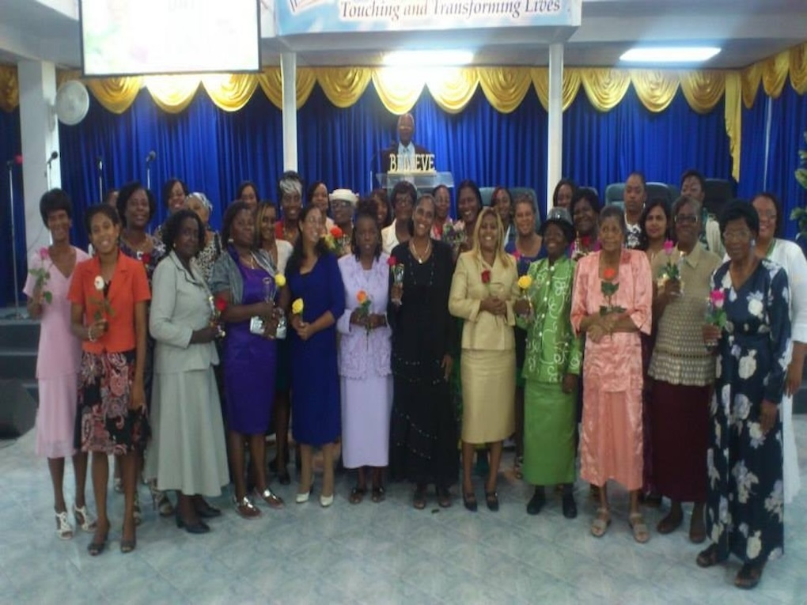

Men's Ministry Strong Kingdom Men of Purpose Mobilized to Make a Difference
Men must demonstrate a level of discipline for success. Training is required to be Godly. 1 Timothy 4:7

Women's Ministry United in Purpose and Cause
The Scripture is clear about the ferocity of the attack of the enemy. It is necessary as women to be ever alert. 1 Peter 4:12.
Children's Ministry
From generation to generation the works of the Lord must be praised and we must declare His mighty acts Psalm 145:4.
Youth Ministry
The worldview of our youth have changed significantly. Programs have now been adjusted to accommodate and impact the lives of our Young people.
Training Ministry
Potential to achieve great things lies in the lives of those around you that would in fact add value to the ministry. Investing time, effort and resorces in our people is biblcal. We ae instructed to commit what we have heard to the faithful who will be able to teach others. 2 Timothy 2:2
Community Programmes
As a church we have a direct responsibility to our Jerusalem our immediate Community, being sensitive to connect and respond to the prevailing needs. Relationship with Institutions, Security services, Education, Social services are established to compliment their efforts.
Music and Arts Ministry
"Make a joyful noise unto the Lord" Worship, Praise Dance with Celebration with Songs, Musical instruments and your entire being before the Lord.
Intercessory Ministry
Our fight is not in the natural against physical beings but against principalities, powers and spiritual wickedness. Our fight is in the spirit. Prayer connects us into the spiritual realm for our victory.